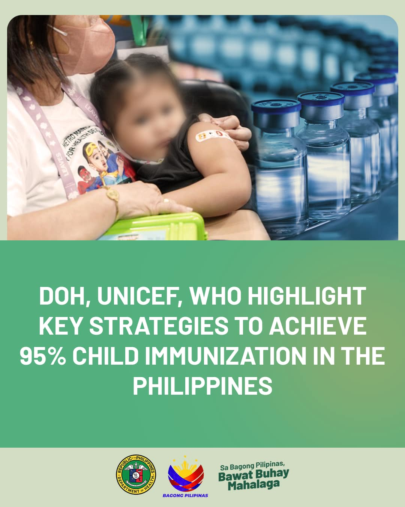

TACLOBAN CITY (PIA) – Recognizing the vital role of media in the dissemination of accurate information to the public about health programs of the government, the Department of Health (DOH) has engaged media practitioners from the Visayas for a three-day conference on health literacy in Iloilo City.
The event brought together members of the media from Eastern Visayas, Central Visayas, Western Visayas, and the Negros Island Region aimed at discussing critical health topics to include nutrition, family planning, the impact of population on the health of the Filipinos, tuberculosis, disaster resilience, innovative approaches to prevent sexually infectious diseases, among others.
“We acknowledge the important role of our media partners in influencing behaviors of the general public and in influencing their healthy choices,” said Arlene Arbas, division chief of the DOH Health Promotion Bureau.
With the proliferation of health-related misinformation and disinformation in social media, a concerted effort involving the media sector to promote health literacy is vital to combat fake news.
The DOH considers media as a powerful tool capable of raising awareness, shaping public opinion, and creating a reliable, consistent stream of publicity promoting an accurate, responsive, and responsible health communication system across the regions.
During the conference, members of the media also gained insights on current health issues and participated in meaningful discussions.
“To be part of the conference is a huge privilege as this takes my full responsibility, credibility, and compassion towards public service through broadcast journalism,” said Jaime Gravador of K5 News FM Tacloban Gravador, one of the participants.
Gravador believed that such kind of engagement with the media is highly beneficial in creating a comprehensive and effective information dissemination leading to a healthier community.
Another participant, Perla Lena of the Philippine News Agency-Iloilo, saw the vital role the private sector plays as the government’s partner in the implementation of health programs.
“The conference is quite enlightening as we were able to see the efforts of the private sector in pushing the health programs of the government particularly on tuberculosis and the importance of having a healthy food environment,” Lena said.
For Earl Christian Combate of GMA7-Iloilo, he highlighted the importance of health-related information dissemination down to grassroots communities.
“The media conference helps us a lot to share to the public, particularly those in rural areas what they ought to know about the different health programs of the government for a better and healthy Philippines,” Combate said.
The DOH hopes that the meaningful convergence of about 50 media practitioners and government communicators will empower them to serve as effective channels for reliable health communication, ensuring that accessible and factual health information reaches every Filipino. (CBA/PIA Eastern Visayas)
Source: MIMS Philippines Healthcare News & Department of Health
Posted on: August 5, 2025